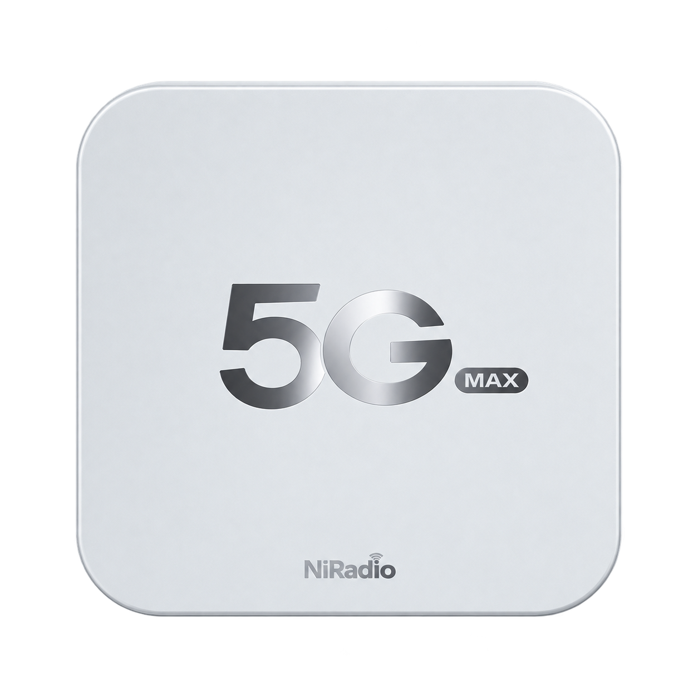

    <div class="dashboard">
      <section class="overview" aria-label="设备与连接状态">
        <div class="hero">
          <div class="greeting"><div><span class="accent-line" aria-hidden="true"></span><h1 id="connection-heading">连接正常</h1><p id="connection-description">—</p></div></div>
          <div class="device-scene" role="group" aria-label="设备外观与节日装饰">
            <div class="rings" aria-hidden="true"><i></i><i></i><i></i><i></i></div>
            <div class="device-shadow" aria-hidden="true"></div>
            
            <div class="device-caption"><strong>C2000MAX</strong><span>鲲鹏无限 · 5G CPE</span></div>
          </div>
          <dl class="metrics">
            <div class="metric ui-card radio-card cellular"><dt class="radio-card-heading"><span><svg class="icon icon-tone-signal" aria-hidden="true"><use href="#signal"/></svg>移动网络</span><span class="ui-badge neutral" id="network-generation">—</span></dt><dd class="operator-reading"><strong id="operator-name">未获取运营商</strong><span class="operator-mode" id="network-mode">—</span></dd></div>
            <div class="metric ui-card radio-card radio-metric"><dt class="radio-card-heading"><span><svg class="icon icon-tone-signal" aria-hidden="true"><use href="#activity"/></svg>信号质量</span></dt><dd class="radio-card-values"><div><span class="stat-label">RSRP</span><span class="radio-value"><strong id="nr-rsrp">—</strong><small>dBm</small></span></div><div><span class="stat-label" id="signal-secondary-label">SINR</span><span class="radio-value"><strong id="nr-sinr">—</strong><small>dB</small></span></div></dd></div>
            <div class="metric ui-card radio-card carrier-metric"><dt class="radio-card-heading"><span><svg class="icon icon-tone-device" aria-hidden="true"><use href="#layers"/></svg>频段与聚合</span></dt><dd class="radio-card-values"><div><span class="stat-label">主频段</span><span class="radio-value"><strong id="nr-band">—</strong></span></div><div><span class="stat-label">载波聚合</span><span class="radio-value"><strong id="nr-ca" aria-label="载波数量未获取">—</strong></span></div></dd></div>
            <div class="metric ui-card radio-card system-status-card" role="region" aria-labelledby="system-status-title">
              <dt class="radio-card-heading" id="system-status-title"><span><svg class="icon icon-tone-network" aria-hidden="true"><use href="#activity"/></svg>系统状态</span></dt>
              <dd class="radio-card-values system-status-grid">
                <div class="system-status-item"><span class="stat-label">CPU 占用率</span><small id="cpu-usage-detail" hidden>采样中</small><div class="status-ring cpu-ring" id="cpu-usage-ring" role="progressbar" aria-label="CPU 占用率" aria-valuemin="0" aria-valuemax="100" aria-valuetext="采样中"><svg viewBox="0 0 100 100" aria-hidden="true"><circle class="status-ring-track" cx="50" cy="50" r="43"/><circle class="status-ring-fill" cx="50" cy="50" r="43" pathLength="100" stroke-dasharray="100" stroke-dashoffset="100"/></svg><span class="status-ring-value" id="cpu-usage-value">—</span></div></div>
                <div class="system-status-item"><span class="stat-label">活动连接数</span><small id="connections-detail" hidden>未获取</small><div class="status-ring connections-ring" id="connections-ring" role="progressbar" aria-label="活动连接占用比例" aria-valuemin="0" aria-valuemax="100" aria-valuetext="未获取"><svg viewBox="0 0 100 100" aria-hidden="true"><circle class="status-ring-track" cx="50" cy="50" r="43"/><circle class="status-ring-fill" cx="50" cy="50" r="43" pathLength="100" stroke-dasharray="100" stroke-dashoffset="100"/></svg><span class="status-ring-value" id="connections-value">—</span></div></div>
              </dd>
            </div>
          </dl>
        </div>
        <div class="health-card ui-card">
          <div class="uptime"><span class="status-dot" aria-hidden="true"></span><div><span class="health-label">运行时间</span><p id="uptime-value">—</p></div></div>
          <button class="signal-health" data-panel="signal"><svg class="icon icon-tone-signal"><use href="#signal"/></svg><div><span class="health-label">信号强度</span><p id="signal-quality">—</p></div><svg class="icon chevron"><use href="#chevron"/></svg></button>
        </div>
        <section class="resource-card ui-card" aria-labelledby="resource-title">
          <header class="resource-header"><span class="ui-icon-box icon-tone-network"><svg class="icon icon-tone-network" aria-hidden="true"><use href="#memory"/></svg></span><div class="resource-heading"><h2 id="resource-title">内存与存储空间</h2><p id="resource-capacity">—</p></div><div class="resource-total"><strong id="ram-percent">—</strong><span id="ram-total-detail">—</span></div></header>
          <p class="resource-note" id="resource-note" role="status" hidden></p>
          <div class="ram-section">
            <div class="resource-row"><span><strong>RAM</strong><span class="resource-muted">分配比例</span></span><span class="resource-values">已用 <b id="ram-used">—</b><span class="resource-divider">/</span>可用 <b id="ram-free">—</b></span></div>
            <div class="ram-bar ui-progress" role="img" id="ram-bar" aria-label="RAM 数据未获取"><i class="ram-active" id="ram-active-bar"></i><i class="ram-cached" id="ram-cache-bar"></i></div>
            <ul class="ram-legend"><li><i class="legend-active"></i>活跃 <span id="ram-active-label">—</span></li><li><i class="legend-cache"></i>缓存 <span id="ram-cache-label">—</span></li><li><i class="legend-free"></i>空闲 <span id="ram-free-label">—</span></li></ul>
          </div>
          <div class="storage-section"><div class="resource-row"><span><strong>RootFS</strong><span class="resource-muted">/overlay 闪存</span></span><b class="storage-value" id="flash-label">—</b></div><div class="storage-bar ui-progress" id="flash-bar" role="progressbar" aria-label="RootFS 闪存占用" aria-valuemin="0" aria-valuemax="100" ><i class="flash-fill" id="flash-fill"></i></div></div>
          <div class="storage-section swap-section"><div class="resource-row"><span><strong>SWAP</strong><span class="resource-muted" id="swap-description">交换空间</span></span><b class="storage-value" id="swap-label">—</b></div><div class="storage-bar ui-progress" id="swap-bar" role="progressbar" aria-label="SWAP 交换空间占用" aria-valuemin="0" aria-valuemax="100" ><i class="swap-fill" id="swap-fill"></i></div></div>
        </section>
      </section>

      <aside class="quick-access" aria-label="快捷管理">
        <button class="quick-card ui-card" data-panel="wifi"><svg class="icon card-icon icon-tone-signal"><use href="#wifi"/></svg><span class="card-copy"><strong>Wi-Fi</strong><small id="wifi-name">—</small></span><svg class="icon chevron"><use href="#chevron"/></svg></button>
        <button class="quick-card ui-card" data-panel="devices"><svg class="icon card-icon icon-tone-device"><use href="#people"/></svg><span class="card-copy"><strong>已连接设备</strong><small id="client-count">—</small></span><svg class="icon chevron"><use href="#chevron"/></svg></button>
        <section class="ui-card modem-card" aria-labelledby="modem-title">
          <header class="ui-card-header"><span class="ui-icon-box icon-tone-device"><svg class="icon icon-tone-device" aria-hidden="true"><use href="#radio"/></svg></span><h2 class="ui-card-title" id="modem-title">5G 模组</h2><span class="ui-badge success" id="modem-status">—</span></header>
          <dl class="ui-data-list"><div class="ui-data-row"><dt>模组型号</dt><dd id="modem-model">—</dd></div><div class="ui-data-row"><dt>固件版本</dt><dd id="modem-firmware">—</dd></div><div class="ui-data-row"><dt>5G 模组温度</dt><dd id="modem-temperature">—</dd></div><div class="ui-data-row"><dt>当前 SIM</dt><dd id="modem-sim">—</dd></div></dl>
          <p class="modem-note">读取 QModem 缓存中</p>
          <button class="modem-link" data-panel="signal">查看模组详情<svg class="icon chevron" aria-hidden="true"><use href="#chevron"/></svg></button>
        </section>
        <section class="ui-card thermal-card" aria-labelledby="thermal-title">
          <header class="ui-card-header"><h2 class="ui-card-title" id="thermal-title">设备温度</h2><span class="ui-badge success" id="thermal-status" role="status">—</span></header>
          <div class="temperature-grid"><div class="stat-tile"><span class="stat-label">CPU</span><strong class="stat-value" id="cpu-temperature">—</strong><span class="stat-unit">°C</span></div><div class="stat-tile"><span class="stat-label">Wi-Fi</span><strong class="stat-value" id="wifi-temperature">—</strong><span class="stat-unit">°C</span></div></div>
          <p class="thermal-note" id="thermal-note">—</p>
        </section>
        <section class="story-card" aria-roledescription="轮播图" aria-label="连接生活">
          <div class="mountain-art" aria-hidden="true"></div>
          <div class="snow-foreground" aria-hidden="true"></div>
          <div class="story-copy" aria-live="polite"><h2 id="story-title">更广阔的连接<br>更自由的生活</h2><span class="story-line" aria-hidden="true"></span><p id="story-subtitle">Connect a Wider World</p></div>
          <div class="story-pagination" role="group" aria-label="选择宣传页"><button class="selected" aria-label="第 1 页：更广阔的连接" aria-pressed="true" data-slide="0"></button><button aria-label="第 2 页：每一刻，畅快相连" aria-pressed="false" data-slide="1"></button><button aria-label="第 3 页：让美好，始终在线" aria-pressed="false" data-slide="2"></button></div>
        </section>
      </aside>
    </div>
